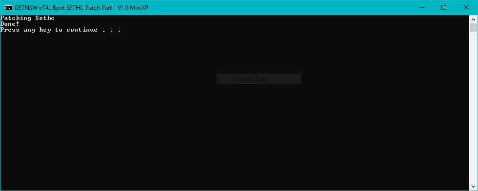

DETNSW Boot Exploit
DETNSW Left there boot loader unlocked without a password this lets you boot anything you want on eT4L PC's this exploit patches Sethc.exe with CMD.exe that allows the user to be able to create an admin user on the local PC that will be able to install ANYTHING on a eT4L PC without any DETNSW.WIN Domain Admin passwords!
Not Ready yet!